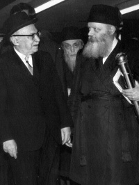

Nasi and Chassid on Purim

Many Chassidim will remember Purim 5731/1971 as a special Purim because of the visit of Mr. Shneur Zalman Rubashov (“Shazar”), the President of Israel at the time, with the Rebbe. It was a royal visit in every respect, both due to the official character of the event as well as the importance with which the Rebbe regarded the arrival of his illustrious guest. This visit, which occurred on Purim night, was arranged according to the schedule unique to this day. In addition, the gifts the Rebbe gave him were in the spirit of the day.
It was the winter of 5731 when Shazar made a ten day visit to the United States. He was the guest of honor at an Israel Bonds dinner in Florida and was the personal guest of President Nixon.
Those were tension-filled days in the Middle East. Two days earlier, on Shabbos 9 Adar, the ceasefire agreement between Israel and Egypt had seemed about to come apart as a result of the Egyptian President’s statement that the ceasefire would not last very long. It was under this cloud that Shazar’s visit to the White House took place.
Shazar actually accorded great importance to his visit to a different Nasi, the leader of the Jewish people and the entire generation, the Rebbe. Despite the efforts of Israeli government officials to dissuade him from visiting the Rebbe – claiming it wasn’t dignified for the State of Israel – Shazar said the visit should take place as planned. He said it was out of the question for him to visit America and not see the Rebbe, since he was one of his Chassidim.
“I will go to the Rebbe not as the president of a country but as a Chassid to a Rebbe, and I never heard of a Rebbe going to a Chassid rather than a Chassid going to the Rebbe,” he said.
He conveyed his desire for a visit to the Rebbe beforehand, through the Chassid Rabbi Ezriel Zelig Slonim. Shazar expressed his desire to be with the Rebbe for Maariv and the reading of the Megilla. Rabbi Slonim conveyed this request to the Rebbe.
PART II
On Friday, Erev Shabbos Parshas Zachor, the preparations went into high gear. The Rebbe said everything should be done in the most dignified way with all pomp and ceremony. He told Rabbi Chadakov to prepare two Siddurei T’hillas Hashem with leather bindings and to have the words “Purim 5731” engraved on them. The Rebbe also asked for another fifty Siddurim with the same inscription though not in leather but another nice binding. These would be distributed to Shazar’s entourage as a memento of this special occasion.
Likewise, the Rebbe instructed that they bind Likkutei Levi Yitzchok of his father on the volumes Shmos through D’varim, with some in leather.
The Rebbe asked that the Alter Rebbe’s maamer “Ashrei Yoshvei Veisecha” be printed, bound in a cloth binding and have “Purim 5731” written on it. He also ordered a Megilla in a silver case from Rabbi Sholom Hecht.
In honor of the occasion, the Rebbe said a special committee should be formed whose purpose would be to arrange and oversee the visit. The members of the committee were the secretaries, gabbaim, and askanim including: Moshe Pinchas Katz, Binyamin Klein, Shlomo Aharon Kazarnovsky, Dovid Raskin, Leibel Groner and Yudel Krinsky. A few days before the visit, the committee presented a detailed program to the Rebbe for his approval. The Rebbe returned it with many fascinating comments.
For example, the committee suggested that representatives (in Heb. Bo’ei ko’ach) of the mosdos stand at the entrance to 770 as the welcoming committee. The Rebbe wrote: or perhaps men of strength (in Heb. baalei ko’ach) so that there be order (and not like the last time) (apparently referring to Shazar’s previous visit).
They wrote about arranging ushers. The Rebbe added: men of strength (and polite too) and it should be obvious that they are assisting.
The committee also suggested that after the reading of the Megilla, the people in shul should sing “Shoshanas Yaakov.” The Rebbe was surprised by the very thought of delaying people at the end of a fast, and he wrote: It’s a fast day.
Regarding the idea that the entire front area of the shul should remain empty, the Rebbe responded in astonishment: …opposite of the din that the Megilla should be [read] with a multitude of people.
The Rebbe also negated the idea of leaving benches just for the dignitaries and removing the rest of the benches from the shul: Where will they sit? Then there won’t be any order at all; just pushing and grabbing.
As for the idea of the shluchim living in the tri-state area bringing their wealthy supporters and introducing them to Shazar, the Rebbe said: That will certainly engender envy and a commotion.
The program was finally arranged. Shazar would arrive at 770 for Maariv; he would spend a few minutes in the Rebbe’s room along with his entourage; then they would all go to daven Maariv and hear the Megilla; this would be followed by a personal yechidus.
The Rebbe said a festive meal should be prepared by Mermelstein catering of Crown Heights. He asked that the meal be attractively presented.
PART III
On the afternoon of Taanis Esther, the American Secret Service came to thoroughly check 770. They wanted to examine the Rebbe’s room, but the Rebbe asked that the secretariat try to dissuade them since he did not want them looking into the drawers with the letters. Rabbi Groner made this request of them and they agreed not to conduct a thorough search of the room, but instead would suffice with a brief, cursory look around.
In the afternoon, a special delegation of elder Chassidim went to welcome Shazar at his hotel. The delegation included: Eliyahu Simpson and Shlomo Aharon Kazarnovsky and the driver Rabbi Yudel Krinsky. The entourage left the hotel at 5:30 for 770.
At 6:00 excitement ran high as a convoy of diplomatic cars entered Eastern Parkway. Shazar sat in an armored car. A huge throng of Chassidim waited outside to welcome the guest and the crowding was intense.
One of the secretaries informed the Rebbe about Shazar’s imminent arrival and the Rebbe went out to welcome the guest. Shazar, who shook hands with those who came out to greet him, looked up and saw the Rebbe standing there in all his glory. His excitement was boundless. The Nasi and Chassid kissed twice while the crowd watched in astonishment at the rare kiruv.
The Rebbe took Shazar by the arm and the two of them entered the Rebbe’s inner sanctum. The Rebbe said to Shazar (referring to the tensions with Egypt), “Most likely it is ‘and the fear of the Jews fell upon them.’”
Shazar: “Without fear.”
The Rebbe: “If necessary, the fear of the Jews is upon them.”
Shazar said he heard a tape of the Rebbe’s Yud Shevat sicha in which the Rebbe spoke very sharply about several matters concerning Israeli politics. Shazar asked, “Why is it necessary to become angry? Chassidim don’t have this way of getting angry; only Misnagdim have this way of becoming angry.”
 The Rebbe smiled and said, “I am happy you say that.”
The Rebbe smiled and said, “I am happy you say that.”
Shazar gave the Rebbe a gift, a photocopy of handwritten maamarim, most of them from the Alter Rebbe. He also presented photocopies of a maamer containing allusions to the Geula. It said they were written by the Tzemach Tzedek or the Alter Rebbe. The Rebbe commented, “It’s very interesting since in Chabad they did not speak of allusions at all, and although there is one maamer of the Alter Rebbe (or the Tzemach Tzedek) about this, it is one of the maamarim they did not try and publish. They set it aside even though, generally, they tried very much to publish and publicize maamarim. It will be interesting to analyze this and to see whether it should be printed and publicized.”
Shazar also gave the Rebbe a document reporting about a meeting of rabbanim in Petersburg that took place in 5670/1910 and they discussed the events of that time.
The Rebbe gave gifts to Shazar including a maamer that was published especially for the visit. The Rebbe explained that there is a big chiddush in this maamer for it explains every single pasuk in Ashrei until “karov Hashem l’chol kor’av.” This is not typical of maamarim which usually focus on one verse.
“Is there one thread that goes through all the verses or are they separate points?” asked Shazar.
“There is one theme but they are separate explanations,” replied the Rebbe.
At the conclusion of the first part of the visit, the Rebbe took the Megilla that had been prepared for the occasion, in its beautiful silver holder, and gave it to Shazar. He said, “Since we are going to read the Megilla, this is timely … In order for you to have a memento, the Megilla case has ‘Purim 5731’ engraved on it.”
Shazar was very touched by the gift and by the gesture that expressed the Rebbe’s special appreciation, and he shook the Rebbe’s hand and thanked him for the precious gift.
The Rebbe said, “My father-in-law had an outstanding memory and nevertheless, when it came to davening, even Mincha or Maariv, he would daven from a Siddur. And so I also prepared a Siddur …”
The Rebbe stood up and took a gartel and put it on. Then he took his Siddur and said, “I would also daven in a Siddur like that, but it’s twenty years already that I am davening with my father-in-law’s Siddur.”
Shazar politely said, “You need not change.”
Shazar then suggested that since after the davening and the reading of the Megilla, the Rebbe would have to break his fast, he would wait. When the Rebbe would be ready, he would let him know and Shazar would come in for yechidus. The Rebbe said, “No, we will both come back here after davening.”
The Rebbe and Shazar entered the elevator with the Rebbe’s hand linked in Shazar’s. Rashag, Rabbi Chadakov, and a member of the Secret Service went with them.
That is how they entered the shul packed with Chassidim, with arms linked. The entire affair was exceedingly royal. Three tables and chairs were set up, for the Rebbe, for Shazar, and Rashag. Rabbi Groner opened and folded the Megilla for Shazar according to Chabad custom. Rabbi Groner continued to stand next to him throughout the reading and held the Megilla for him.
Before the Rebbe and his guest had come in, the children had been warned not to use cap guns and explosives when Haman’s name is mentioned, just the usual graggers. This request was made due to the large number of policemen and agents protecting Shazar and his entourage who would react suspiciously at anything like that in Shazar’s presence. Of course, the police were informed of the custom to make noise during the reading. Still, when Haman’s name was read for the first time and the graggers made a racket, the police nervously pulled out their guns.
For additional security, the gabbai, Rabbi Yaakov Lipsker, stood at the entrance of the shul together with the police in order to ensure that only Chassidim entered and no outsiders.
PART IV
After the reading of the Megilla, the Rebbe once again linked arms with Shazar and they left the shul and took the elevator upstairs. This time, it was only Shazar and the Rebbe in a private yechidus. Rabbi Groner went into the room a few minutes later with tea and cake, mashke and fruit.
The yechidus lasted four hours. It ended at midnight and Shazar left the Rebbe’s room for the secretaries’ room where he gave Rabbi Chadakov a pidyon nefesh and money.
They say that the Rebbe did not eat during the yechidus and remained fasting. It was only while Shazar was in the office of the secretariat that the Rebbe ate something.
When Shazar left the office, the Rebbe was informed of this and he left his room to escort him. A large crowd of Chassidim waited outside and when the Rebbe and his guest appeared, they burst into song, “Ki Elokim Yoshia Tziyon.” The Rebbe stayed with Shazar for another five minutes.
Shazar asked, “When will I have the honor of hosting you in Yerushalayim?”
The Rebbe looked serious when he answered, “It would be fine to come to Yerushalayim. Who will give me permission to leave Yerushalayim?”
Then Shazar entered his car while the Rebbe stood in the doorway and watched until Shazar could no longer be seen.
Mr. Tzvi Kaspi, then the Israeli consul in the United States, who was present at the meeting, wrote in his memoirs, “On the way back to the hotel, Shazar did not say much. He was very moved after the excitement of meeting the Rebbe and perhaps, sad too, as every Chassid is when parting from his Rebbe.”
PART V
The next day, Purim, the Rebbe sent mishloach manos to Shazar. Rabbi Dovber Junik and Rabbi Dovber Alenick along with Rabbi Binyamin Klein made the delivery. Shazar sent back eighteen bottles of mashke of various kinds and the Rebbe said trumos and maasros should be taken since they were products of Eretz Yisroel, and a bottle of each type should be brought to his room.
That is what happened on Purim 5731. It was an exciting and moving occasion, in a Purim atmosphere touched with solemnity and ceremony.
Based on “Nasi V’Chassid” and diaries of T’mimim
Menachem Ziegelboim. "Nasi and Chassid on Purim." Beis Moshiach, no. 826 (March 7, 2012).